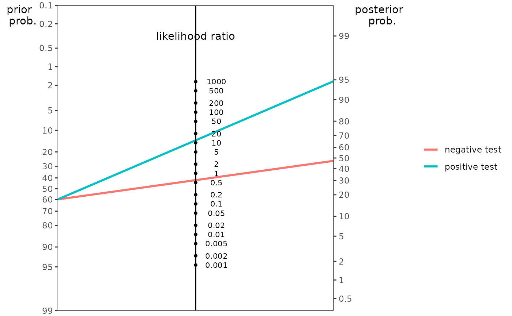
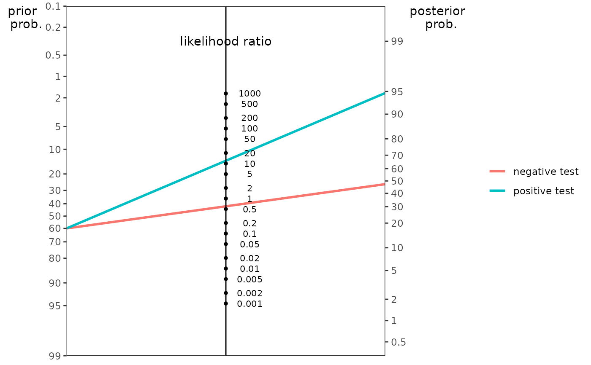
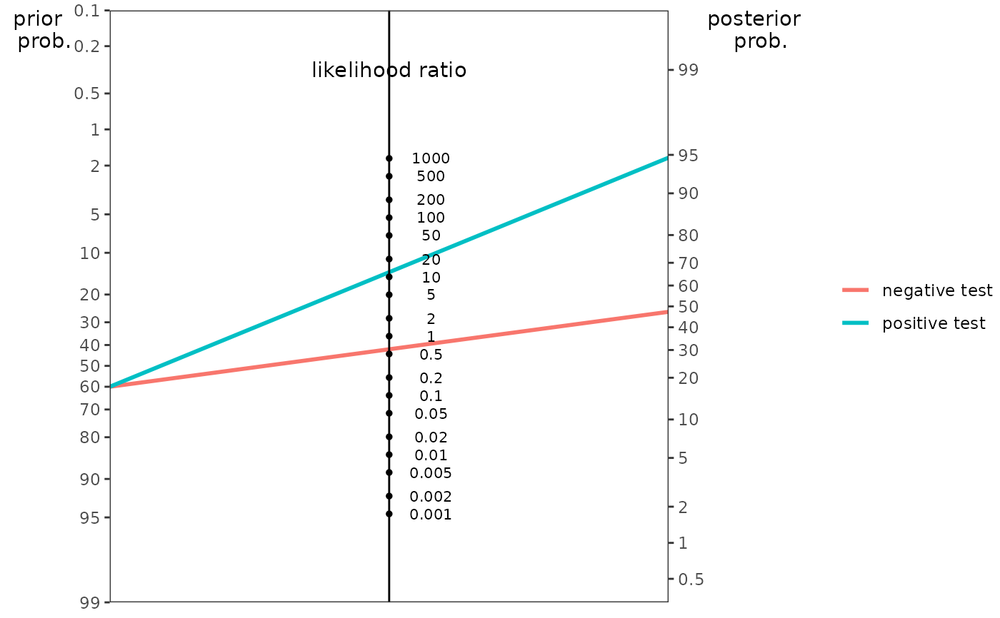

Create nomogram plot.
Usage
nomogrammer(
TP = NULL,
TN = NULL,
FP = NULL,
FN = NULL,
pretestProb = NULL,
selectionRate = NULL,
SN = NULL,
SP = NULL,
FPR = NULL,
PLR = NULL,
NLR = NULL,
Detail = FALSE,
NullLine = FALSE,
LabelSize = (14/5),
Verbose = FALSE
)Arguments
- TP
Number of true positive cases.
- TN
Number of true negative cases.
- FP
Number of false positive cases.
- FN
Number of false negative cases.
- pretestProb
Pretest probability (prevalence/base rate/prior probability) of characteristic, as a number between 0 and 1.
- selectionRate
Selection rate (marginal probability of positive test), as a number between 0 and 1.
- SN
Sensitivity of the test at a given cut point, as a number between 0 and 1.
- SP
Specificity of the test at a given cut point, as a number between 0 and 1.
- FPR
False positive rate of the test at a given cut point, as a number between 0 and 1.
- PLR
Positive likelihood ratio of the test at a given cut point.
- NLR
Positive likelihood ratio of the test at a given cut point.
- Detail
If
TRUE, overlay key statistics onto the plot.- NullLine
If
TRUE, add a line from prior prob through LR = 1.- LabelSize
Label size.
- Verbose
Print out relevant metrics in the console.
Details
Create nomogram plot from the following at a given cut point:
1) true positives (TP), true negatives (TN), false positives (FP), and false negatives (FN)
2) pretest probability (pretestProb), sensitivity (SN), and specificity (SP), OR
3) pretest probability (pretestProb), sensitivity (SN), and false positive rate (FPR), OR
4) pretest probability (pretestProb), sensitivity (SN), and selection rate (selectionRate), OR
5) pretest probability (pretestProb), positive likelihood ratio (PLR), and negative likelihood ratio (NLR)
Examples
nomogrammer(
TP = 253,
TN = 386,
FP = 14,
FN = 347)

nomogrammer(
pretestProb = .60,
SN = 0.421,
SP = 0.965)

nomogrammer(
pretestProb = .60,
SN = 0.421,
FPR = 0.035)
nomogrammer(
pretestProb = .60,
SN = 0.421,
selectionRate = 0.267)
nomogrammer(
pretestProb = .60,
PLR = 12,
NLR = 0.6)
